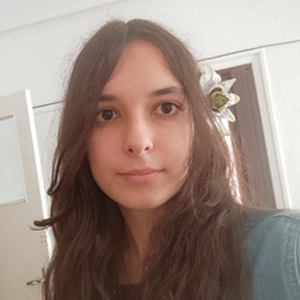

fechaNacimiento: 2001-05-04
lugarNacimiento: Gijón, Asturias
coordsNacimiento:
longitud: -5.647731114109561
latitud: 43.53527084736443
altitud: 5

comentario: Estudiante de Ingeniería Informática del Software
fechaNacimiento: 1971-07-26
lugarNacimiento: Pravia, Asturias
coordsNacimiento:
longitud: -6.112974715606762
latitud: 43.48615050039599
altitud: 59

comentario: Padre
fechaNacimiento: 1940-05-18
lugarNacimiento: Viu de Llevata, Lleida
coordsNacimiento:
longitud: 0.8121072331378797
latitud: 42.369490391361744
altitud: 1234
fechaFallecimiento: 2003-09-04
lugarFallecimiento: Avilés, Asturias
coordsFallecimiento:
longitud: -5.92714800211595
latitud: 43.55452206422115
altitud: 21

comentario: Abuelo por parte de padre
fechaNacimiento: 1906-07-03
lugarNacimiento: Muros de Nalón, Asturias
coordsNacimiento:
longitud: -6.105562702215373
latitud: 43.543443469226325
altitud: 131
fechaFallecimiento: 1992-05-22
lugarFallecimiento: Soto del Barco, Asturias
coordsFallecimiento:
longitud: -6.071216075733286
latitud: 43.5327410987212
altitud: 61

comentario: Bisabuelo por parte de abuelo por parte de padre
fechaNacimiento: 1905-06-14
lugarNacimiento: Muros de Nalón, Asturias
coordsNacimiento:
longitud: -6.117188853029939
latitud: 43.546583727625325
altitud: 126
fechaFallecimiento: 1971-05-12
lugarFallecimiento: Muros de Nalón, Asturias
coordsFallecimiento:
longitud: -6.115056099849746
latitud: 43.54462513987004
altitud: 136
comentario: Bisabuela por parte de abuelo por parte de padre
fechaNacimiento: 1942-08-10
lugarNacimiento: Muros de Nalón, Asturias
coordsNacimiento:
longitud: -6.105562702215373
latitud: 43.543443469226325
altitud: 131

comentario: Abuela por parte de padre
fechaNacimiento: 1905-04-19
lugarNacimiento: Muros de Nalón, Asturias
coordsNacimiento:
longitud: -6.104488616888746
latitud: 43.54392395787351
altitud: 129
fechaFallecimiento: 1975-10-05
lugarFallecimiento: Muros de Nalón, Asturias
coordsFallecimiento:
longitud: -6.105338597679843
latitud: 43.542968196793865
altitud: 131

comentario: Bisabuelo por parte de abuela por parte de padre
fechaNacimiento: 1905-06-07
lugarNacimiento: Muros de Nalón, Asturias
coordsNacimiento:
longitud: -6.103439310272827
latitud: 43.5420252216079
altitud: 114
fechaFallecimiento: 1994-03-20
lugarFallecimiento: Muros de Nalón, Asturias
coordsFallecimiento:
longitud: -6.104444111702224
latitud: 43.542848205718656
altitud: 130
comentario: Bisabuela por parte de abuela por parte de padre
fechaNacimiento: 1971-01-29
lugarNacimiento: Gijón, Asturias
coordsNacimiento:
longitud: -5.607511687123249
latitud: 43.52589336435242
altitud: 61

comentario: Madre
fechaNacimiento: 1937-02-22
lugarNacimiento: Villalobos, Zamora
coordsNacimiento:
longitud: -5.4759527238233625
latitud: 41.94602846067811
altitud: 724

comentario: Abuelo por parte de madre
fechaNacimiento: 1917-01-10
lugarNacimiento: Villalobos, Zamora
coordsNacimiento:
longitud: -5.4747118042864535
latitud: 41.947397252214984
altitud: 722
fechaFallecimiento: 1975-09-05
lugarFallecimiento: Gijón, Asturias
coordsFallecimiento:
longitud: -5.607511687123249
latitud: 43.52589336435242
altitud: 61

comentario: Bisabuelo por parte de abuelo por parte de madre
fechaNacimiento: 1916-03-05
lugarNacimiento: Villalobos, Zamora
coordsNacimiento:
longitud: -5.473644537059647
latitud: 41.94509313552526
altitud: 733
fechaFallecimiento: 2003-10-17
lugarFallecimiento: Madrid
coordsFallecimiento:
longitud: -3.6872690561884567
latitud: 40.481326490381385
altitud: 728

comentario: Bisabuela por parte de abuelo por parte de madre
fechaNacimiento: 1936-10-31
lugarNacimiento: Valdunquillo de Campos, Valladolid
coordsNacimiento:
longitud: -5.313715446650053
latitud: 42.042548484682314
altitud: 740

comentario: Abuela por parte de madre
fechaNacimiento: 1908-02-16
lugarNacimiento: Valdunquillo de Campos, Valladolid
coordsNacimiento:
longitud: -5.311783858067096
latitud: 42.041480555563595
altitud: 740
fechaFallecimiento: 2000-04-21
lugarFallecimiento: Valdunquillo de Campos, Valladolid
coordsFallecimiento:
longitud: -5.314208420676102
latitud: 42.04151825301395
altitud: 740

comentario: Bisabuelo por parte de abuela por parte de madre
fechaNacimiento: 1906-11-25
lugarNacimiento: Valdunquillo de Campos, Valladolid
coordsNacimiento:
longitud: -5.310788873185057
latitud: 42.040457528893455
altitud: 743
fechaFallecimiento: 1986-06-14
lugarFallecimiento: Valdunquillo de Campos, Valladolid
coordsFallecimiento:
longitud: -5.314208420676102
latitud: 42.04151825301395
altitud: 740

comentario: Bisabuela por parte de abuela por parte de madre